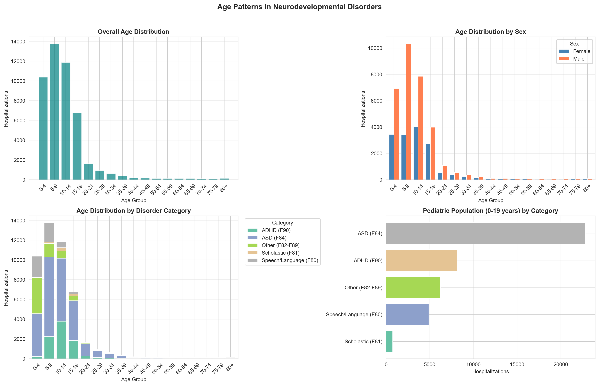

fig, axes = plt.subplots(2, 2, figsize=(16, 10))# Age group distribution - all disordersax1 = axes[0, 0]age_dist = hospitalizations.groupby('age_group')['hospitalizations'].sum()age_order = ['0-4', '5-9', '10-14', '15-19', '20-24', '25-29', '30-34', '35-39', '40-44', '45-49', '50-54', '55-59', '60-64', '65-69', '70-74', '75-79', '80+']age_dist = age_dist.reindex([a for a in age_order if a in age_dist.index])ax1.bar(age_dist.index, age_dist.values, color='teal', alpha=0.7)ax1.set_xlabel('Age Group')ax1.set_ylabel('Hospitalizations')ax1.set_title('Overall Age Distribution', fontweight='bold')ax1.tick_params(axis='x', rotation=45)ax1.grid(True, alpha=0.3, axis='y')# Age by sexax2 = axes[0, 1]age_sex = hospitalizations.groupby(['age_group', 'sex'])['hospitalizations'].sum().unstack(fill_value=0)age_sex = age_sex.reindex([a for a in age_order if a in age_sex.index])age_sex.plot(kind='bar', ax=ax2, color=['steelblue', 'coral'], width=0.8)ax2.set_xlabel('Age Group')ax2.set_ylabel('Hospitalizations')ax2.set_title('Age Distribution by Sex', fontweight='bold')ax2.tick_params(axis='x', rotation=45)ax2.legend(title='Sex')ax2.grid(True, alpha=0.3, axis='y')# Age distribution by categoryax3 = axes[1, 0]age_category = hosp_by_category.groupby(['age_group', 'category'])['hospitalizations'].sum().unstack(fill_value=0)age_category = age_category.reindex([a for a in age_order if a in age_category.index])age_category.plot(kind='bar', ax=ax3, colormap='Set2', width=0.8, stacked=True)ax3.set_xlabel('Age Group')ax3.set_ylabel('Hospitalizations')ax3.set_title('Age Distribution by Disorder Category', fontweight='bold')ax3.tick_params(axis='x', rotation=45)ax3.legend(title='Category', bbox_to_anchor=(1.02, 1), loc='upper left')ax3.grid(True, alpha=0.3, axis='y')# Pediatric focus (0-17)ax4 = axes[1, 1]pediatric_groups = ['0-4', '5-9', '10-14', '15-19']pediatric_data = hosp_by_category[hosp_by_category['age_group'].isin(pediatric_groups)]ped_by_cat = pediatric_data.groupby('category')['hospitalizations'].sum().sort_values(ascending=True)colors = plt.cm.Set2(np.linspace(0, 1, len(ped_by_cat)))ax4.barh(ped_by_cat.index, ped_by_cat.values, color=colors)ax4.set_xlabel('Hospitalizations')ax4.set_title('Pediatric Population (0-19 years) by Category', fontweight='bold')ax4.grid(True, alpha=0.3, axis='x')plt.suptitle('Age Patterns in Neurodevelopmental Disorders', fontsize=14, fontweight='bold', y=1.02)plt.tight_layout()save_figure(fig, 'age_distribution_neurodev.png')plt.show()

Figure 4: Age Distribution of Neurodevelopmental Disorder Hospitalizations
![]()